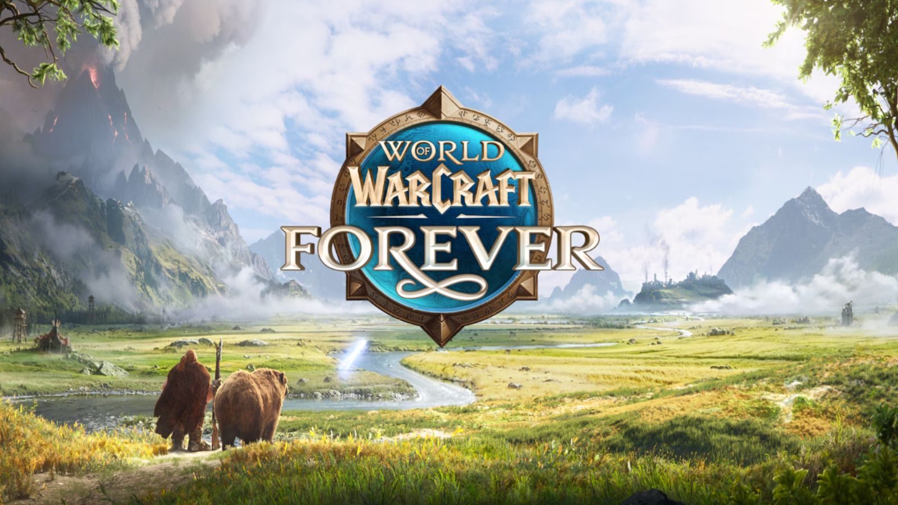
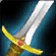
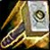
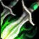
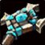
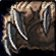
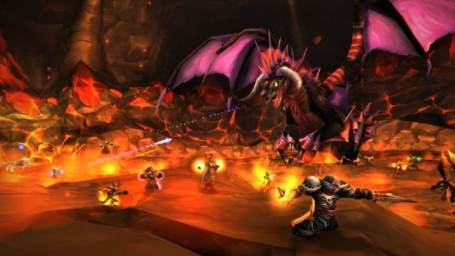

Le système d'Héritage (Legacy)
La grande nouveauté de progression de WoW Forever : une progression « horizontale » partagée par tout ton compte, qui récompense l'exploration de tous les aspects du jeu plutôt que la seule montée de niveau.

Comment ça marche ?
L'Héritage tient en trois éléments : des défis, qui rapportent chacun un point d'Héritage ; des avantages, achetés avec ces points dans trois arbres ; et des récompenses cosmétiques, débloquées au fil des points gagnés.
- Débloquer l'Héritage : il s'ouvre avec ton premier point, généralement quand ton premier personnage atteint le niveau 25. Atteindre le niveau 150 dans un métier principal (hors récolte) ou explorer toute la carte fonctionne aussi.
- Y accéder : icône en forme de bouclier dans le menu, ou touche Y par défaut.
- Des points pour tout le compte : les points sont liés à ton compte Battle.net et profitent à tous tes personnages (sauf en mode Extrême).
- Une dépense par personnage : chaque personnage choisit ses avantages, jusqu'à 16 points au lancement. Tu peux donc spécialiser chacun différemment.
Les 65 défis
Coche tes défis pour compter tes points
Classes
Atteindre les niveaux 25, 45 et 60 avec chaque classe.
0 / 27
Classes
Atteindre les niveaux 25, 45 et 60 avec chaque classe.

Guerrier
Paladin
Voleur
Prêtre
Druide
Métiers
Atteindre 150, 225 et 300 dans chaque métier principal hors récolte.
0 / 18
Métiers
Atteindre 150, 225 et 300 dans chaque métier principal hors récolte.
Les métiers de récolte (minage, herboristerie, dépeçage) ne comptent pas.

JcJ
Rangs PvP, réputations des champs de bataille et périple saisonnier.
0 / 12
JcJ
Rangs PvP, réputations des champs de bataille et périple saisonnier.
Tous les détails sur notre page PvP.

Aventure
Explorer le monde et une grande suite de quêtes.
0 / 2
Aventure
Explorer le monde et une grande suite de quêtes.

Donjons
Vaincre le dernier boss de tous les donjons d'une tranche de niveaux.
0 / 3
Donjons
Vaincre le dernier boss de tous les donjons d'une tranche de niveaux.
Voir notre liste des donjons.

Raids
Vaincre les grands raids de Forever.
0 / 3
Raids
Vaincre les grands raids de Forever.
Les avantages : trois arbres
Avec tes points, chaque personnage choisit ses avantages parmi 21, répartis dans trois arbres. Les valeurs exactes ne sont pas encore toutes connues et peuvent évoluer d'ici la sortie.
Métiers
- Heures supplémentairesPlus de chances de gagner un point de compétence dans tous les métiers, y compris les compétences de classe comme le crochetage.
- Récolte généreusePlus de chances d'obtenir des matériaux rares en minage, herboristerie et dépeçage.
- MarchandageRéduit le prix des objets achetés chez tous les marchands.
- CharismatiqueChance de gagner plus de faveur marchande auprès de l'Administration commerciale d'Azeroth (Alliance) ou des Transports logistiques Durotar (Horde).
- Cordon bleuChance de cuisiner un plat supplémentaire.
- Maître des appâtsChance de pêcher un poisson supplémentaire.
- Étude assidueBonus quotidien de progression des métiers, ou essences élémentaires gratuites une fois tous les métiers au niveau 300.
Aventure
- Bien reposéAugmente le plafond d'expérience reposée et la vitesse à laquelle elle s'accumule.
- Frisson de l'aventureRend un peu de vie et de mana quand tu achèves un ennemi notable.
- Alerte avancéeAméliore la détection des unités camouflées, hors champs de bataille.
- Guide de terrainRéduit d'une heure le temps de recharge pour ajouter des éléments au feu de camp.
- Médecine de terrainRaccourcit l'effet « Un bandage a été appliqué récemment » (sans effet en donjon, raid et champ de bataille).
- TalentDébloque tes points de talent jusqu'à cinq niveaux plus tôt.
- Vols fréquentsTrajets aériens moins chers et plus rapides.

Ingéniosité
- GourmandAllonge la durée des bonus de nourriture.
- Mort et vifTon fantôme court plus vite vers ton corps, et les buffs de groupe et de raid sont gratuits après une résurrection.
- RenforcerRéduit la perte de durabilité à la mort.
- Pour un grand honneurAugmente l'honneur gagné en JcJ.
- PermanenceAllonge la durée des buffs de groupe, de raid et de feu de camp.
- DiplomatieAugmente les gains de réputation.
- Économie des composantsLes techniques de classe n'utilisent plus de composants achetés chez les marchands, et les objets de feu de camp de niveau 1 n'en demandent plus.
Les récompenses d'Héritage
Des objets cosmétiques exclusifs, débloqués selon le total de points gagnés sur ton compte. Le thème du lancement : l'ours spectral, compagnon du chasseur nain de la cinématique.
15 pointsRéplique de carabine à air comprimé de Forgefer
Un jouet pour des batailles pour rire : ses faux fusils étourdissent les autres joueurs et comptent les points.
VerrouilléOurson spectral
Une mascotte exclusive, inspirée du chasseur nain et de son compagnon de la cinématique de WoW Forever.
Verrouillé 40 points
40 pointsTabard d'ours spectral
Un tabard exclusif au système d'Héritage.
Verrouillé 55 points
55 pointsRênes d'ours spectral
Une monture ours spectral, exclusive au système d'Héritage.
VerrouilléPaliers de la bêta, susceptibles de changer avant la sortie. De nouveaux objets et jouets arriveront avec chaque mise à jour de contenu.
Et le mode Extrême (Hardcore) ?
Le mode Extrême, où chaque personnage n'a qu'une vie, n'est pas disponible au lancement et aura ses propres règles :
- Les défis réussis dans les autres modes n'apparaissent pas en mode Extrême.
- À l'inverse, un défi réussi en mode Extrême compte pour tous tes personnages des autres modes.
- Les défis JcJ y sont impossibles : 12 défis propres au mode Extrême les remplaceront.
Et après ?
Blizzard prévoit d'ajouter de nouveaux défis à chaque mise à jour de contenu, de nouveaux avantages dans les arbres existants et dans de nouveaux arbres, ainsi que de nouvelles récompenses à mesure que de nouveaux points apparaîtront.